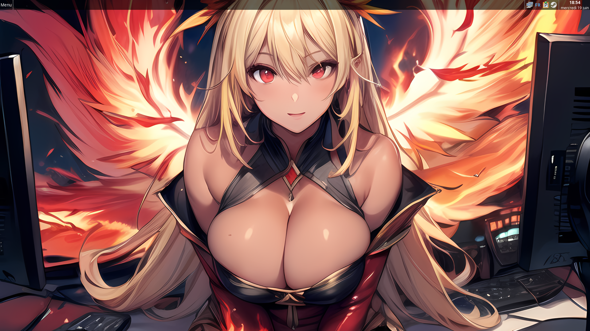
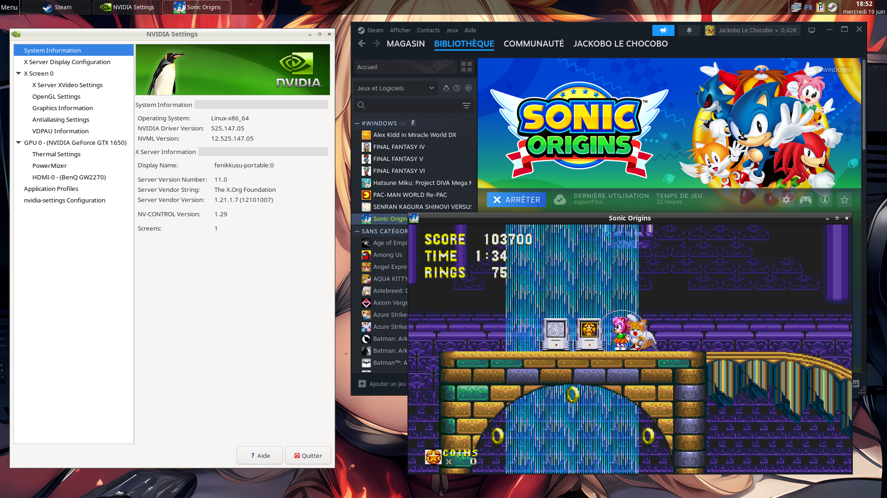

Présentation
Fenikkusu (Phénix en japonais) est une distribution Linux compact, rapide et moderne. Avec la possibilité de fonctionner directement à partir d'un disque dur sur votre PC ou d'une clé/disque dur USB, Fenikkusu est portable. Il offre une interface utilisateur visuellement attrayante et une sélection de programmes de base préinstallés tel qu'un gestionnaire de fichiers, un éditeur de texte, un navigateur Web, etc.
Construit sur Debian, Fenikkusu utilise des fonctionnalités que j'avais réalisé pour Platypux : la sauvegarde automatique des paramètres vidéo/Xorg pour tous les utilisateurs de votre système pour chaque PC utilisé par exemple. Avec les packages et applications facilement disponibles avec apt ou AppImage, les possibilités sont pratiquement illimités. Ainsi, que vous soyez un utilisateur expérimenté de Linux ou que vous débutiez, Fenikkusu a tout ce dont vous aurez besoin pour vos activités personnelles et professionnelles.
 
Téléchargements
Système construit sur Debian 12 - Kernel 6.1.0-21-amd64
Pour se connecter sur la session - Nom d'utilisateur : fenikkusu, Mot de passe : fenikkusu
Autres projets
Steam Proton Solutions
Vous trouverez sur cette page des outils et astuces pour lancer les jeux natifs Linux et les jeux Windows sous Linux, achetés sur Steam principalement, avec Proton uniquement ( https://github.com/ValveSoftware/Proton ). Valve développant le support Windows avec leur projet, je ne proposerai pas d'autres solutions afin de rester avec leurs outils uniquement. Tous les jeux testés dans cette liste seront lancés directement via le client Steam officiel.
Lien du projet : https://github.com/JackoboLeChocobo/Steam-Proton-Solutions